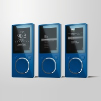

Zune Takes Music Discovery to the Next Level With New Ways to Find and Access Digital Music
Software update will enable Zune users to tag songs and buy music directly from FM radio and download and stream music on the go beginning Sept. 16.
By Microsoft Corporation, Published 8th September 2008
REDMOND, Wash. - Sept 8, 2008 Zune, Microsoft Corp.'s end-to-end music and entertainment service, again revolutionises how customers discover and connect to the music they love, where and how they want it. Starting next week, every Zune portable media player will let consumers wirelessly download or stream millions of songs on the go from thousands of wireless hot spots around the country. Free, powerful software and firmware updates will give Zune owners the ability to discover, tag and purchase songs directly from the built-in FM radio, wirelessly access the Zune Marketplace store on the go, and tap into interactive, personalised music recommendations that add even more value to the Zune Pass subscription. Zune is also expanding its device lineup with new 16GB and 120GB capacities as well as shiny new blue-on-silver and sleek all-black color schemes. The new features will begin rolling out on Sept. 16, 2008.
"Digital music services really come alive when they help people find not only the music they know they like, but the music they didn't know they would love," said Chris Stephenson, general manager of Global Marketing for Zune at Microsoft. "With the combination of subscription, wireless access to millions of tracks, and powerful discovery features like personal recommendations and the ability to buy music from FM radio, Zune is taking the digital music experience to the next level."
Wireless Connections
More than 61 percent of people say they discover new music by listening to the radio.1 With that in mind, Zune is taking advantage of the wireless connection and the built-in FM tuner to deliver a new feature called Buy from FM, which lets customers tag and purchase songs they hear on FM radio stations2 directly from the Zune device. When the customer is in a Wi-Fi hot spot, the song can be immediately downloaded to the Zune device. If Wi-Fi is not available, the device will have a queue of songs ready to download when connected to a home computer or in a hot spot. Buy from FM uses Radio Data System and RT+ data feeds within the FM broadcast frequencies that identify song and artist data and enable the Zune service to identify and deliver the track to the customer.
"Microsoft's decision to integrate an FM tuner into the Zune was revolutionary and they continue their extraordinary leadership with Buy from FM," said John Hogan, president and CEO of Clear Channel Radio. "We've always known that radio is the primary source for discovering new music, and Microsoft's decision to marry music discovery and delivery does two things: enables consumers to instantly satisfy their passion and enables FM song tagging to be enjoyed by all radio listeners, everywhere."
In addition, users can now access the Zune Marketplace music store directly from their device when they are in a recognised Wi-Fi hot spot, or through a home wireless network. To make it easy to discover music on the go, customers can browse lists of featured new releases and top songs and albums sorted by genre, or use the on-screen keypad to type in the song of their choice. Once they have picked a track or album, they can either download it or stream it directly to the Zune device.
Zune customers have a choice in how they acquire music: They can pay per track or choose a Zune Pass subscription. Zune Pass subscribers can download or stream music to the device or their computer interchangeably, all for a flat rate of $14.99 per month. So whether a device has 4 GB or 120 GB of storage, Zune Pass customers can access and stream millions of songs directly to their Zune.
More Ways to Discover Music: Channels and Picks
The new Zune software update taps expert sources, recommendations from the Zune service and online music community, and the user's own play data to create a dynamic, digital music experience where discovering music is easy and seamless.
- Channels. Channels are an exciting new tool for music discovery. Customers can explore channels programmed by experts from the music industry such as the Billboard Top 100, The FADER magazine and KEXP radio, in addition to workout-themed channels tailored for high, medium and low impact, and top chart channels from all genres and subgenres. The powerful Zune software will even create custom channels for each user, based on favourite artists and genres. Channels are included with a monthly Zune Pass subscription and can be synced to the device for playback on the go. For non-Zune Pass subscribers, the Channels are available for a la carte purchase.
- Personal Picks. Now the Zune software learns what kind of music users like and makes personal recommendations. When users log onto Zune Marketplace, they’ll find a new area called Picks where the Zune recommendation algorithm will suggest artists, albums and tracks based on the music they have been listening to, as well as channels they might like and listeners like them in the Zune Social.
- The Zune Social online music community. Customers can connect with millions of like-minded fans and share music via the Zune Card, a real-time playlist of each user's favourite and recently played tracks that can be accessed on the Web or within the Zune software, or synced to the Zune device. Zune Pass subscribers can play full tracks from Zune Cards synced to their device while on the go, and now the playlists will even automatically update with the most recently played tracks when Zune connects to a wireless hot spot. It's like subscribing to a free feed of music from the sources people trust most - their friends.
Powerful Software
The Zune PC software is a free download at http://www.zune.net that provides rich discovery and media management capabilities to help consumers make the most of their existing music collections, in addition to providing access to the Zune Social and Zune Marketplace so they can add to it.
- Mixview. Customers can select an artist, album or Zune Card to activate a dynamic, visual mosaic of related music and listeners. With each click users can take the view in a new direction, creating a fun, graphical way to discover new music. Mixview works with users' current collection of music, in addition to tracks and albums from across the Zune Marketplace.
- Now Playing. The improved Now Playing view is more interactive and cinematic. Users can sit back and enjoy the combination of great artist imagery, colorful effects, bio information and data from the Zune online music community, all combined in a full-screen view. They can also click to dive deeper into the music behind the picture, providing another great way to interact with their collection.
A new firmware update will also improve the experience on the Zune device. In addition to the new wireless functionality, Zune will bring new features customers have been asking for:
- Games on the go. Two free games, "Hexic" and "Texas Hold 'Em", will keep users entertained on the go.
- Audiobooks. All Zune devices will feature support for audiobooks this fall from industry leaders in the digital distribution of audiobook content.
- Audible. Customers can visit audible.com to download and sync favorite books from the 50,000 titles available from over 600 publishers and content providers.
- OverDrive. They can download content from sites powered by overdrive.com, including 7,500 libraries' Web sites worldwide. (http://search.overdrive.com)
Device Pricing Information Effective Sept. 16
120 GB: $249.99
80 GB: $229.993
16 GB: $199.00
8 GB: $149.99
4 GB: $129.993
More information on Zune and related images are available at www.zune.net/press.
About Zune
Zune is Microsoft's music and entertainment brand that provides an integrated digital entertainment experience. The Zune platform includes a line of portable digital media players, elegant software, the Zune Marketplace online store, and the Zune Social online music community, created to help people discover music. Zune is part of Microsoft's Entertainment and Devices Division and supports the company's software-based services vision to help drive innovation in the digital entertainment space. More information can be found online at http://www.zune.net/en-us/press.
1 According to a Kelton Research study sponsored by Zune (April 2008)
2 The song needs to be available in Zune Marketplace for consumers to purchase it. If it is not available, but the radio station is broadcasting the song's meta data, consumers can tag the song (so they can remember the name and artist), but will not be able to purchase it.
3 There are a limited number of 80GB and 4GB devices remaining in the channel, and those that are will be available at this price.